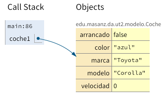
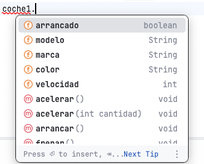
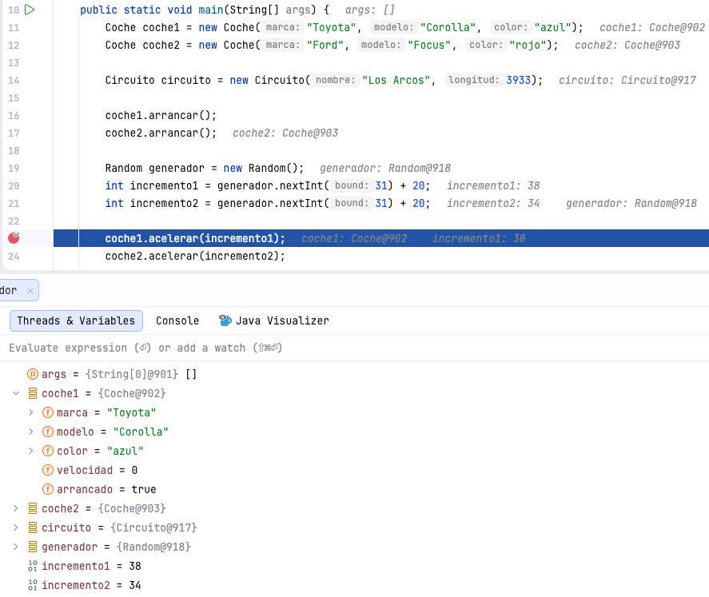
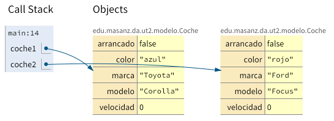
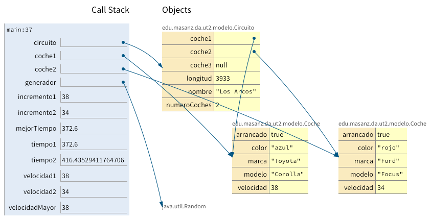

UT 02. Teoría
Objetos y clases
Introducción
Primer contacto con la programación orientada a objetos en Java.
¿Qué vamos a aprender?
Java es un lenguaje orientado a objetos. Esto significa que una parte importante de los programas se construye creando objetos y haciendo que esos objetos realicen operaciones y colaboren entre sí.
En esta unidad comenzaremos a escribir pequeños programas utilizando clases que ya están disponibles. Aprenderemos a crear objetos, consultar y modificar su estado, utilizar sus métodos, proporcionarles información y recoger los resultados que producen.
- Reconocer clases, objetos e instancias.
- Crear objetos a partir de clases existentes.
- Utilizar métodos con y sin parámetros.
- Obtener valores devueltos por métodos.
- Utilizar constructores.
- Relacionar objetos entre sí.
- Utilizar clases de las librerías de Java.
- Distinguir métodos de instancia y métodos estáticos.
- Utilizar el IDE para ejecutar y observar nuestros programas.
Idea importante
En esta unidad nos centraremos principalmente en utilizar clases y objetos. Más adelante aprenderemos a diseñar y programar nuestras propias clases.
2.1. Clases y objetos
Una clase describe un tipo de objetos; un objeto es una instancia concreta de esa clase.
Clase
Una clase describe un determinado tipo de objetos. Podemos considerarla inicialmente como una plantilla que establece qué características tendrán esos objetos y qué operaciones podrán realizar.
CocheEn este ejemplo, Coche puede ser una clase.
Objeto o instancia
Un objeto representa un elemento concreto creado a partir de una clase. También utilizaremos la palabra instancia como sinónimo de objeto.
miCochemiCoche puede representar un objeto concreto de la clase Coche.
Estado y comportamiento
Un objeto posee estado y comportamiento.
Estado
Está formado por los valores de sus características en un determinado momento.
- marca
- modelo
- color
- velocidad
- arrancado
Comportamiento
Está formado por las operaciones que puede realizar el objeto.
- arrancar
- parar
- acelerar
- frenar
- consultar velocidad
Las características suelen denominarse atributos o campos. Las operaciones se implementan mediante métodos.
Para pensar
Piensa en las clases Estudiante y Personaje. ¿Qué características podrían formar parte de su estado? ¿Qué operaciones podrían formar parte de su comportamiento?
2.2. Crear objetos
Los objetos se crean a partir de clases y se accede a ellos mediante referencias.
Crear un nuevo objeto
Veamos una instrucción Java que crea un objeto:
Coche coche1 = new Coche();Podemos interpretarla de esta forma:
Coche |
coche1 |
new Coche() |
|---|---|---|
| tipo | variable | creación de un nuevo objeto |
La expresión new Coche() crea un nuevo objeto de la clase Coche.
Referencias a objetos
La variable coche1 no contiene directamente todos los datos del coche. Contiene una referencia que permite acceder al objeto creado.
coche1 ─────► objeto Coche
marca
modelo
color
velocidad
arrancadoPor eso podemos decir que coche1 es una variable referencia.

Imagen 1. Referencia a un objeto con el plugin Java Visualizer en Intellij IDEA.
Crear varios objetos
Coche coche1 = new Coche();
Coche coche2 = new Coche();
Coche coche3 = new Coche();Se han creado tres objetos independientes. Aunque pertenecen a la misma clase, cada uno mantiene su propio estado.
Convenciones de nombres
Los nombres de las clases empiezan por mayúscula: Coche, Circuito, Estudiante.
Los nombres de variables empiezan por minúscula: coche, circuito, estudiante.
Cuando el nombre contiene varias palabras utilizamos habitualmente camelCase: miCoche, velocidadMaxima, nombreEstudiante.
2.3. Métodos: pedir a un objeto que haga algo
Los métodos representan operaciones que podemos solicitar a un objeto.
Invocar métodos
Una vez creado un objeto podemos utilizar sus métodos.
Coche coche1 = new Coche();
coche1.arrancar();
coche1.acelerar();La estructura general es:
objeto.metodo();La instrucción coche1.arrancar(); solicita al objeto referenciado por coche1 que ejecute el método arrancar().
Los métodos modifican objetos concretos
Coche coche1 = new Coche();
Coche coche2 = new Coche();
coche1.arrancar();
coche1.acelerar();
coche2.arrancar();Las operaciones realizadas sobre coche1 afectan a coche1. Las realizadas sobre coche2 afectan a coche2.
Idea clave
Distintas instancias de una misma clase comparten el mismo tipo de comportamiento, pero mantienen su propio estado.
Ayuda del IDE
Al escribir coche1., el IDE puede mostrar los métodos disponibles para ese objeto. Esto resulta especialmente útil cuando utilizamos clases que no hemos programado nosotros.

Imagen 2. Autocompletado mostrado por el IDE.
2.4. Métodos con parámetros
Los parámetros permiten que un método reciba información para realizar su tarea.
Proporcionar información a un método
Algunos métodos necesitan recibir datos para realizar su tarea.
coche.acelerar(20);El valor 20 indica cuánto queremos acelerar.
La cabecera del método podría ser:
void acelerar(int cantidad)El parámetro cantidad indica que el método necesita un dato de tipo int.
Parámetro y argumento
Parámetro
void acelerar(int cantidad)cantidad es el parámetro.
Argumento
coche.acelerar(20);20 es el argumento proporcionado al realizar la llamada.
Tipos de los parámetros
coche.acelerar(20);
coche.setColor("azul");
personaje.moverHorizontal(50);
personaje.moverVertical(20);
personaje.cambiarNombre("Alex");Los métodos pueden recibir valores de distintos tipos, como int, double, boolean o String.
Más adelante veremos que una clase también define un tipo y que, por tanto, un objeto puede utilizarse como argumento.
2.5. Métodos que devuelven resultados
Un método puede devolver un valor que podemos guardar o utilizar directamente.
Obtener un resultado
Algunos métodos no solo realizan una acción: también pueden devolver información.
int getVelocidad()La palabra int indica que el método devuelve un número entero.
int velocidad = coche.getVelocidad();El resultado devuelto por el método se guarda en la variable velocidad.
Utilizar directamente el resultado
System.out.println(coche.getVelocidad());En este caso no guardamos primero el valor en una variable: utilizamos directamente el resultado devuelto.
Métodos que no devuelven un valor
void acelerar(int cantidad)La palabra void indica que el método no devuelve un resultado que podamos guardar.
| Método | ¿Devuelve valor? |
|---|---|
void acelerar(int cantidad) |
No |
int getVelocidad() |
Sí, un int |
2.6. Consultar y modificar el estado
El estado de un objeto cambia cuando sus atributos cambian.
Modificar el estado
coche.setColor("azul");
coche.arrancar();
coche.acelerar(30);Después de estas operaciones el objeto puede haber cambiado su estado.
Consultar el estado
String color = coche.getColor();
int velocidad = coche.getVelocidad();
boolean arrancado = coche.isArrancado();Estos métodos nos permiten obtener información sobre el objeto.
El estado cambia durante la ejecución
Un mismo objeto puede pasar por distintos estados conforme se ejecutan métodos sobre él.
Coche coche = new Coche();
coche.setColor("azul");
coche.arrancar();
coche.acelerar(30);El estado de un objeto es el conjunto de valores de sus atributos en un determinado instante.
Observar objetos durante la ejecución
Mediante el modo Debug y los puntos de interrupción, el IDE permite detener temporalmente la ejecución y observar variables, objetos y atributos.

Imagen 3. Debug de un programa.
Un plugin como Java Visualizer de IntelliJ IDEA puede facilitar todavía más la comprensión mostrando gráficamente las relaciones entre variables y objetos.

Imagen 4. Dos objetos Coche con estados diferentes.
2.7. Constructores
Los constructores permiten crear objetos y establecer sus valores iniciales.
Crear e inicializar objetos
La expresión Coche() que aparece tras new hace referencia a un constructor.
Coche coche = new Coche();Los constructores permiten crear e inicializar objetos.
Constructores con argumentos
Coche coche = new Coche("Toyota", "Corolla", "azul");En este caso proporcionamos tres argumentos en el momento de crear el objeto. El objeto puede comenzar directamente con esos valores iniciales.
Una clase puede tener varios constructores
new Coche();
new Coche("Toyota", "Corolla", "azul");Una misma clase puede ofrecer diferentes formas de creación. El IDE puede ayudarnos mostrando los constructores disponibles y los argumentos que necesita cada uno.
Idea clave
El constructor se utiliza cuando nace el objeto; los métodos se utilizan después para trabajar con ese objeto.
2.8. Escribir un programa sencillo con objetos
Ya podemos combinar creación de objetos, métodos y resultados en un mismo programa.
Un pequeño programa completo
public class Principal {
public static void main(String[] args) {
Coche coche1 =
new Coche("Toyota", "Corolla", "azul");
Coche coche2 =
new Coche("Ford", "Focus", "rojo");
coche1.arrancar();
coche1.acelerar(30);
coche2.arrancar();
coche2.acelerar(20);
System.out.println(coche1.getModelo());
System.out.println(coche1.getVelocidad());
System.out.println(coche2.getModelo());
System.out.println(coche2.getVelocidad());
}
}Por ahora podemos considerar el método main como el punto de comienzo de la ejecución de nuestro programa.
Qué hace el programa
Escribir, ejecutar, comprobar
Conviene programar de forma incremental: escribir una pequeña parte, ejecutarla, observar el resultado, corregir los posibles errores y continuar.
Buena práctica
No esperes a tener todo el programa escrito para probarlo. Ejecutar con frecuencia ayuda a detectar antes los errores y a comprender mejor lo que está ocurriendo.
2.9. Los objetos pueden relacionarse
En una aplicación, los objetos pueden colaborar y mantener referencias entre sí.
Objetos que colaboran
Coche coche =
new Coche("Toyota", "Corolla", "azul");
Circuito circuito =
new Circuito("Los Arcos", 3933);Tenemos dos objetos de clases diferentes. Un método de Circuito podría recibir un objeto Coche:
void inscribir(Coche coche)y podríamos utilizarlo así:
circuito.inscribir(coche);Las clases también son tipos
int velocidad;
String nombre;
Coche coche;Coche es también un tipo. Por eso puede aparecer como tipo de una variable o de un parámetro.
Varias referencias al mismo objeto
Después de inscribir un coche, un objeto Circuito puede mantener una referencia al mismo objeto Coche al que también apunta la variable coche.

Imagen 5. Un circuito referenciando a dos coches.
Otro ejemplo
Estudiante ana =
new Estudiante("Ana", 18);
Curso programacion =
new Curso("Programacion");
programacion.matricular(ana);La idea es la misma: un objeto puede utilizar o almacenar referencias a otros objetos.
2.10. Utilizar clases de las librerías de Java
Las librerías permiten reutilizar clases ya desarrolladas.
Clases disponibles en Java
Java incluye una gran cantidad de clases preparadas para resolver problemas habituales. Estas clases se organizan en paquetes.
Una de ellas es Random, que permite generar números pseudoaleatorios.
Importar una clase
import java.util.Random;Esta instrucción indica que queremos utilizar la clase Random del paquete java.util.
Random generador = new Random();
int numero = generador.nextInt(100);Identificar los elementos
| Elemento | Significado |
|---|---|
Random |
clase |
generador |
variable referencia |
new Random() |
creación de objeto mediante constructor |
nextInt |
método |
100 |
argumento |
numero |
variable que recibe el resultado |
Reutilizar código
Random generador = new Random();
int numero = generador.nextInt(100);
int dado = generador.nextInt(6) + 1;No necesitamos saber cómo está programada internamente la clase Random. Necesitamos saber cómo utilizarla.
2.11. Métodos de instancia y métodos estáticos
No todos los métodos se utilizan de la misma manera: algunos pertenecen a objetos y otros a la clase.
Métodos de instancia
La mayoría de los métodos utilizados hasta ahora se invocan sobre un objeto concreto:
coche.getVelocidad();
generador.nextInt(100);Su estructura es objeto.metodo(...). Estos métodos suelen denominarse métodos de instancia.
Métodos estáticos
Otros métodos pueden utilizarse directamente a través de una clase, sin crear previamente un objeto.
double raiz = Math.sqrt(144);
double potencia = Math.pow(5, 3);
int mayor = Math.max(27, 42);
int menor = Math.min(27, 42);Estos son ejemplos de métodos estáticos.
Comparación
| Método de instancia | Método estático |
|---|---|
generador.nextInt(100) |
Math.sqrt(144) |
| Se llama sobre un objeto | Se llama mediante la clase |
| Necesitamos crear el objeto | No necesitamos crear un objeto de Math |
Por ahora
Nuestro objetivo es reconocer y utilizar ambos tipos de llamada. Más adelante estudiaremos cómo crear nuestros propios métodos estáticos.
2.12. Integración de los conceptos
Los conceptos de la unidad se combinan de forma natural dentro de un mismo programa.
Crear varios objetos
Coche coche1 =
new Coche("Toyota", "Corolla", "azul");
Coche coche2 =
new Coche("Ford", "Focus", "rojo");
Circuito circuito =
new Circuito("Los Arcos", 3933);Utilizar una clase de biblioteca
Random generador = new Random();
int incremento1 = generador.nextInt(31) + 20;
int incremento2 = generador.nextInt(31) + 20;Los valores generados pueden utilizarse después como argumentos:
coche1.acelerar(incremento1);
coche2.acelerar(incremento2);Consultar y comparar
int velocidad1 = coche1.getVelocidad();
int velocidad2 = coche2.getVelocidad();
int velocidadMayor =
Math.max(velocidad1, velocidad2);Aquí combinamos métodos de instancia con un método estático.
Relacionar objetos
circuito.inscribir(coche1);
circuito.inscribir(coche2);Un objeto puede recibir referencias a otros objetos.
Un objeto como argumento y un resultado como retorno
double tiempo1 =
circuito.calcularTiempoEnSegundos(coche1);
double tiempo2 =
circuito.calcularTiempoEnSegundos(coche2);
double mejorTiempo =
Math.min(tiempo1, tiempo2);En una aplicación pequeña aparecen ya muchos de los mecanismos fundamentales que utilizaremos continuamente al programar en Java.
2.13. Leer una llamada a un método
Aprender a descomponer una instrucción facilita mucho la lectura de código Java.
Leer una llamada compleja
double tiempo =
circuito.calcularTiempoEnSegundos(coche1);Podemos analizarla mediante una serie de preguntas:
| Pregunta | Respuesta |
|---|---|
| ¿Sobre qué objeto se llama al método? | circuito |
| ¿Qué método se llama? | calcularTiempoEnSegundos |
| ¿Qué argumento se proporciona? | coche1 |
| ¿De qué tipo es el argumento? | Coche |
| ¿Devuelve un resultado? | Sí |
| ¿De qué tipo? | double |
| ¿Dónde se guarda? | tiempo |
Otro ejemplo
int numero = generador.nextInt(100);generador: objeto.nextInt: método.100: argumento.int: tipo del resultado.numero: variable que almacena el resultado.
Método estático
int mayor = Math.max(27, 42);Math: clase.max: método estático.27y42: argumentos.int: tipo del resultado.mayor: variable que almacena el resultado.
Estrategia de lectura
Cuando una instrucción resulte compleja, intenta identificar siempre: objeto o clase → método → argumentos → resultado → variable receptora.
2.14. Resumen
Repaso de las ideas y patrones de código más importantes de la unidad.
Conceptos fundamentales
- Una clase describe un determinado tipo de objetos.
- Un objeto o instancia es un elemento concreto creado a partir de una clase.
- El estado está formado por los valores de los atributos.
- El comportamiento se implementa mediante métodos.
Patrones de código que debemos reconocer
Crear un objeto:
Coche coche = new Coche("Toyota", "Corolla", "azul");Llamar a un método:
coche.arrancar();Proporcionar un argumento:
coche.acelerar(20);Guardar un resultado:
int velocidad = coche.getVelocidad();Pasar un objeto como argumento:
circuito.inscribir(coche);Utilizar una clase de biblioteca:
Random generador = new Random();Llamar a un método estático:
int mayor = Math.max(27, 42);Herramientas de apoyo
Durante el desarrollo utilizaremos el IDE para crear, ejecutar, probar y depurar nuestros programas.
El modo Debug permite observar las variables y el estado de los objetos. Además, un plugin como Java Visualizer de IntelliJ IDEA puede ayudarnos a visualizar las referencias y las relaciones entre objetos.
Al terminar la unidad
Deberías ser capaz de leer y escribir pequeños programas que creen objetos, utilicen sus métodos y constructores, trabajen con clases de Java y combinen varios objetos entre sí.